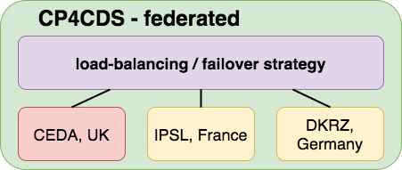

Copernicus
Climate Projections for Copernicus
Credits
This presentation has been created with
Reveal.js by Hakim El Hattab
Create beautiful interactive slide decks using HTML.
Use left/right arrow keys. ESC for slides overview
PDF Print then File|Print... (Chrome only)
Copernicus Overview
Climate Change Service
Climate Data Store
CP4CDS
- Climate Projections for Climate Data Store
- QCed Subset of CMIP5
- ESGF Software Stack - independent of ESGF
- Compute Service using WPS Standard
- Serving external Codes - MAGIC (KNMI, eScienceCenter, DLR)
CP4CDS Overview

CP4CDS Interfaces

CP4CDS Health Check (99% UK office hours)

CP4CDS Federated
CP4CDS WPS

CP4CDS Toolbox